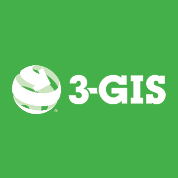

3-GIS - Software Engineer Intern
June 2022 - August 2023
Software Engineer Intern | Summer Intern for 2022 and 2023 | Part time during school semesters
Description:
- Crafted, engineered, and refined backend solutions utilizing C# within the dynamic .NET framework.
- Collaborated on the development, testing, and debugging phases to produce software tailored for fiber
cable network management entities, facilitating seamless mapping, planning, and visualization of
intricate fiber cable infrastructures.
- Updated and modernized legacy code ensuring its seamless transition to compliance with the latest
SDK standards.